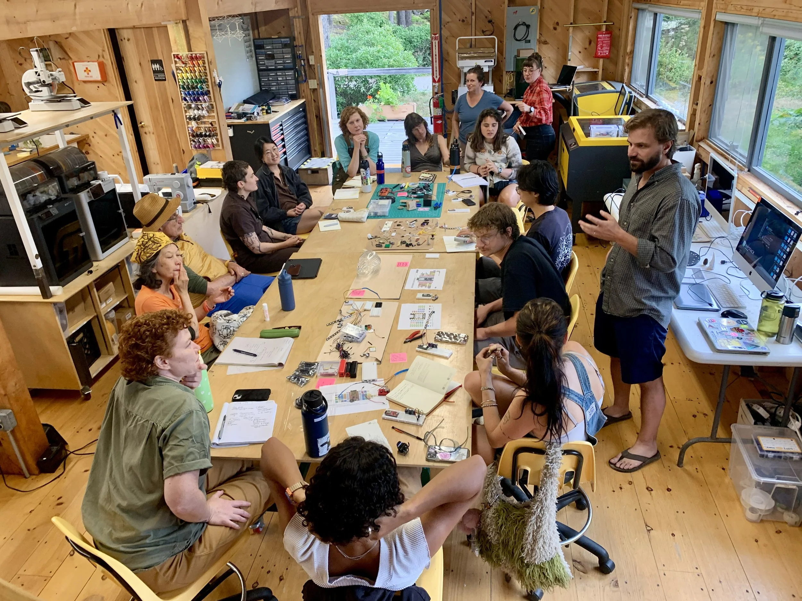

Welcome to the Maine Makers Workshop!
Maine Makers Workshop is a community space for people who want to learn practical skills, explore creative ideas, and build projects with their own hands.
Our workshops are designed for beginners, hobbyists, students, and experienced makers who want to develop new skills in woodworking, crafts, electronics, 3D printing, and other hands-on activities.
Whether you are learning to use tools for the first time or looking for a place to work on your next project, Maine Makers Workshop provides instruction, shared workspace, and a community of people who enjoy making things.
Explore Our Services
About Us
Our Story
Maine Makers Workshop was created to give community members access to practical learning opportunities, shared tools, and hands-on creative experiences.
Many people want to learn skills such as woodworking, electronics, crafting, or digital fabrication but may not have:
- the equipment
- workspace
- tools
- instruction
- or confidence to begin on their own
The makerspace provides an environment where people can learn these skills through guided practice.
Learning by Making
Maine Makers Workshop believes that people often understand practical skills best when they can apply them directly.
Workshops combine:
- instructor demonstrations
- safety instruction
- guided practice
- hands-on work
- problem solving
- and completed projects.
Participants are encouraged to ask questions and learn from mistakes while maintaining safe work habits.
Community Makerspace
The makerspace is designed to bring together people with different interests and levels of experience.
Participants may include:
- first-time makers
- hobbyists
- students
- artists
- homeowners
- electronics enthusiasts
- woodworkers
- woodworkers
Safety First
Tools and equipment can create hazards if used incorrectly.
For that reason, Maine Makers Workshop requires members and workshop participants to follow all safety rules.
Certain equipment may only be used after:
- orientation
- instructor approval
- safety training
- or equipment-specific authorization.
Membership alone does not automatically provide unrestricted access to all tools.

Workshops
Workshop seats are limited and availability may change as registrations are received.
Skill Levels
Beginner
- No previous experience required.
- Instruction covers fundamental skills and safe basic techniques.
Beginner to Intermediate
- Some familiarity with tools or related skills may be helpful, but extensive experience is not required.
Intermediate
- Participants should already understand basic concepts and be comfortable performing introductory tasks.
- Intermediate workshops may require previous experience or completion of a related beginner class.
Workshop prices include standard instructional materials unless otherwise stated. Additional personal project materials may require separate purchase.
Workshop 1 — Build a Wooden Storage Crate
Category: Woodworking Date: September 19, 2026 Duration: 3 hours Skill Level: Beginner Price: $45 Available Seats: 10
Participants learn basic woodworking skills by constructing a simple wooden storage crate.
The workshop introduces:
- measuring
- marking
- basic cutting
- sanding
- assembly
- fastening
- and simple finishing.
No previous woodworking experience is required.
Required safety equipment must be worn during tool use.
Workshop 2 — Introduction to Woodworking Tools
Category: Beginner Maker Classes Date: September 26, 2026 Duration: 2 hours Skill Level: Beginner Price: $30 Available Seats: 12
This workshop introduces participants to common woodworking hand tools and selected power tools.
Topics include:
- tool identification
- basic tool purpose
- safe handling
- workshop organizatio
- measuring
- cutting awareness
- and personal protective equipment.
This class is recommended for people who have little or no previous workshop experience.
Workshop 3 — Handmade Fall Wreath
Category: Crafts Date: October 3, 2026 Duration: 2 hours Skill Level: Beginner Price: $35 Available Seats: 14
Participants create a seasonal decorative wreath using mixed craft materials.
The workshop covers:
- basic design layout
- material selection
- safe use of craft tools
- attachment methods
- color balance
- and finishing details
Materials are included.
Workshop 4 — Soldering Basics
Category: Electronics Date: October 10, 2026 Duration: 2.5 hours Skill Level: Beginner Price: $40 Available Seats: 10
Participants learn the fundamentals of safe electronic soldering while assembling a simple beginner project.
Topics include:
- soldering iron safety
- identifying basic components
- preparing connections
- making solder joints
- inspecting connections
- and basic troubleshooting.
No previous electronics experience is required.
Workshop 5 — Design Your First 3D Print
Category: 3D Printing Date: October 17, 2026 Duration: 3 hours Skill Level: Beginner Price: $42 Available Seats: 8
Participants learn the basic process of turning a simple digital design into a physical 3D print.
The workshop introduces:
- basic 3D modeling
- preparing a model
- slicing software
- printer setup
- filament basics
- print orientation
- and common beginner printing problems.
Participants will prepare a small project for printing.
Participants will prepare a small project for printing.
Category: Woodworking Date: October 24, 2026 Duration: 4 hours Skill Level: Beginner to Intermediate Price: $60 Available Seats: 8
Participants build a small wall shelf while practicing basic woodworking skills.
The workshop includes:
- measuring
- cutting
- layout
- drilling
- assembly
- sanding
- and preparation for finishing.
Participants should be comfortable following workshop safety instructions and using basic tools with instructor supervision.
Workshop Registration Policies
- Workshop seats are limited.
- Registration is recommended in advance.
- Workshop dates and instructors may change when necessary.
- Participants should arrive on time.
- Some workshops require specific clothing or protective equipment.
- Participants must follow instructor directions.
- Unsafe behavior may result in removal from the workshop.
- Certain activities may have age requirements.
- Materials are included unless otherwise stated.
- Registration does not automatically provide authorization to use restricted equipment outside the class.
Memberships
Membership does not automatically authorize use of every tool or machine. Some equipment requires orientation, training, instructor approval, or separate authorization before use.
Day Pass
Price: $20 per day
A Day Pass provides access to approved shared workspace areas during eligible operating hours.
Appropriate for:
- occasional visitors
- people working on short projects
- members who do not need monthly access
- and visitors trying the makerspace before purchasing a membership.
A Day Pass does not automatically authorize use of restricted equipment.
Some tools require separate safety training.
Monthly Maker Membership
Price: $65 per month
The Monthly Maker membership provides regular access during standard member workshop hours.
Includes:
- shared workspace access
- approved basic hand-tool access
- member workshop discounts
- access to community maker areas
- and participation in eligible member activities.
Restricted equipment may require separate authorization.
Unlimited Maker Membership
Price: $110 per month
The Unlimited Maker membership is intended for frequent users who want expanded makerspace access.
Includes:
- expanded access during approved operating hours
- shared workspace
- eligible equipment use after required training
- workshop discounts
- limited project storage
- and member maker-area access.
Unlimited Maker does not mean unrestricted use of every tool.
All equipment rules still apply.
Membership Policies
- Membership applies only to the registered member.
- Membership does not provide unrestricted tool access.
- Members must follow all safety rules.
- Tool authorization may be suspended for unsafe use.
- Work areas should be cleaned after use.
- Shared tools should be returned to their designated locations.
- Personal projects should not block shared workspace.
- Storage is limited and must be approved.
- Hazardous or inappropriate materials may not be brought into the makerspace without approval.
Tool Access
Participants should immediately report damaged or malfunctioning equipment. Equipment that appears unsafe should not be used until it has been inspected by staff.
The makerspace may have different levels of equipment access.
Students may explain tool access using these general categories.
General Access Tools
Tools that may be used after basic orientation or staff instruction.
Examples may include:
- common hand tools
- measuring tools
- selected craft tools
- and approved work surfaces.
Training-Required Equipment
Equipment that requires specific instruction before independent use.
Examples may include:
- selected power tools
- soldering equipment
- 3D printers
- and other specialized maker equipment.
Restricted Equipment
Some equipment may require:
- staff supervision
- advanced training
- age restrictions
- or specific authorization.
Contact Us
Don't be shy to contact us at Maine makerspace if you have interest in any of our workshops, want to find out more about membership options, or if you have any questions!
General Information:
Location: Bangor, Maine
Contact Us:
Phone Number: 207-555-0108
Email: julia@mainemakers.example
When contacting Maine Makers Workshop about a workshop, visitors should be prepared to provide:
- name
- email
- phone number
- workshop of interest
- experience level
- and any questions about the activity.
Workshop schedules may occasionally change because of instructor availability, equipment issues, weather, or enrollment. Registered participants will be contacted when significant schedule changes occur.
For membership questions, visitors may ask about:
- membership options
- operating hours
- tool access
- orientation requirements
- and safety training.
Operating Hours
- Monday: Closed
- Tuesday-Thursday: 12:00 PM-8:00 PM
- Friday: 12:00 PM-6:00 PM
- Saturday: 9:00 AM-6:00 PM
- Sunday: 10:00 AM-4:00 PM
Workshop schedules may occur at specific times within these hours.
Certain member-access periods may vary.
Staff Information
Julia Chen
Position: Founder and Workshop Director
Julia oversees:
- makerspace operations
- programming
- instructor coordination
- memberships
- community partnerships
- and safety procedures.
She works to create programs that make practical skills approachable for new makers.
Ben Carter
Position: Woodworking Instructor
Ben teaches:
- beginner woodworking
- tool orientation
- measuring
- basic project construction
- and safe woodworking practices.
He focuses on helping new makers become comfortable using tools correctly.
Priya Shah
Position: Electronics and 3D Printing Instructor
Priya teaches:
- beginner electronics
- soldering
- basic digital design
- 3D printing
- troubleshooting
- and equipment safety.
She enjoys helping students understand how digital ideas can become physical projects.
Megan Holt
Position: Member Services Coordinator
Megan manages:
- workshop registration
- membership questions
- class scheduling
- customer communication
- and general front-desk operations.
She also helps visitors understand orientation and training requirements.
Safety
Participation in workshop activities requires compliance with all posted safety rules and instructor directions. Failure to follow safety requirements may result in removal from an activity or loss of tool privileges.
Safety Rules
All participants must:
- follow instructor and staff directions
- wear required protective equipment
- complete required safety orientations
- use equipment only when authorized
- keep workspaces clean
- secure loose clothing and hair when required
- report damaged tools immediately
- never bypass equipment safety features
- and stop work if an unsafe condition is observed.
Personal Protective Equipment
Depending on the activity, participants may be required to use:
- safety glasses
- hearing protection
- gloves when appropriate
- dust protection
- closed-toe shoes
- or other task-specific protective equipment.
Requirements depend on the workshop or tool.
Frequently Asked Questions
Do I need previous experience?
No.
Many workshops are specifically designed for beginners.
Each workshop lists an appropriate skill level.
Can I use any tool after purchasing a membership?
No.
Certain tools and equipment require training, orientation, staff approval, or specific authorization.
Are materials included in workshop prices?
Standard materials are included unless the workshop description states otherwise.
Participants working on personal projects may need to purchase their own materials.
Can I reserve a workshop seat in advance?
Yes.
Advance registration is strongly recommended because workshop sizes are limited.
Is Maine Makers Workshop only for experienced makers?
No.
The makerspace welcomes people with many different experience levels.
Beginner classes are available for people learning practical skills for the first time.
Can I bring my own project?
Members may work on approved personal projects in designated areas.
Projects must comply with:
- safety requirements
- workspace rules
- equipment restrictions
- and available storage.
Can children use the makerspace?
Some activities may be appropriate for families or younger participants, but age requirements depend on the workshop and equipment involved.
The website should not imply unrestricted access for children.
Do I need safety training?
Safety training is required before using designated tools and equipment.
The type of training depends on the activity.